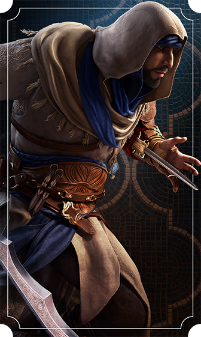
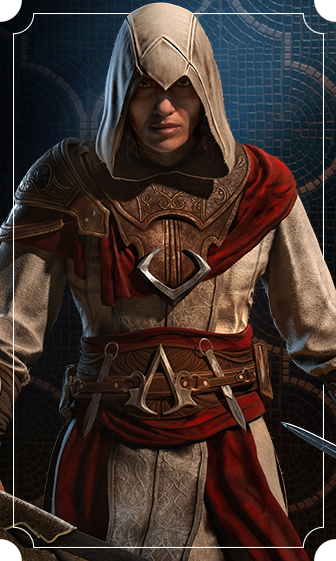
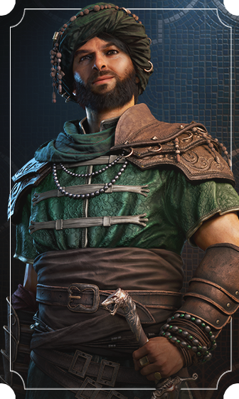

Characters

Originally born in Samarra, Basim lost his mother at a young age and grew up on his own in the
streets of Baghdad. Basim admires the Hidden Ones, and dreams of joining them.
Basim

After escaping a life of oppression, Roshan became a master assassin at the Hidden Ones’ stronghold,
Alamut. Now, she takes Basim under her wing as her first true apprentice.
Roshan

Nehal, as Basim, is a child from the streets. She is a loner, stubborn and determined. As she cares
for Basim, she always reminds him that he should never trust anyone but himself.
Nehal

Ali is the leader of the Zanj rebellion. Apart from being really clever and an erudite, he chose to
fight relentlessly and fiercely against the caliphate. He works alongside the Hidden Ones but
doesn't respect their credo: to him, freedom goes without any constraints.
Ali